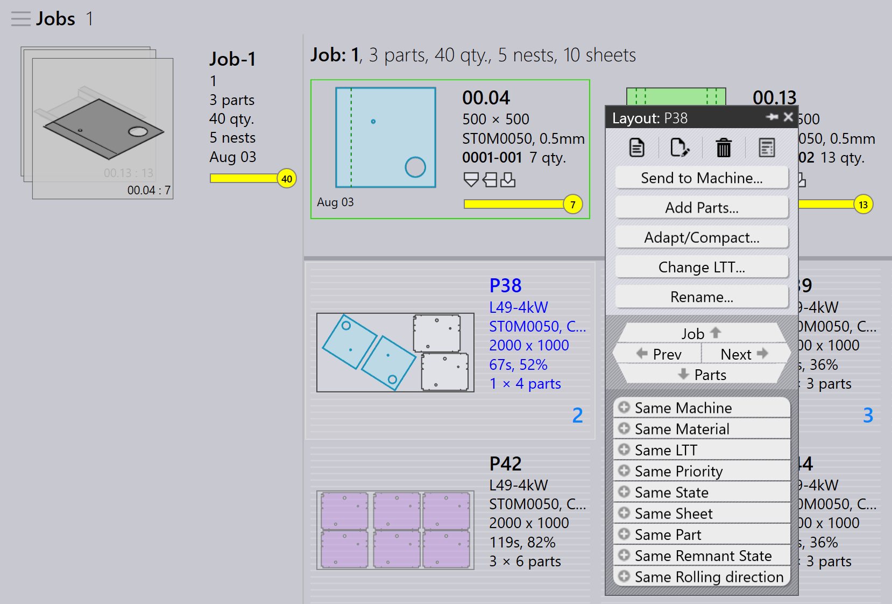

레이아웃 패널
이 섹션에서는 레이아웃 인스턴스를 관리하는 데 사용되는 Send to machine, Recall from machine, Export outputs, Mark complete, Add parts…, Adapt/Compact…, Split layout 및 기타 옵션과 같은 레이아웃 관련 작업을 설명합니다.

|
|
Send to machine
-
네스트가 준비되면(채워지거나 긴급히 필요한 경우) 머신으로 보낼 수 있습니다.
-
네스트를 마우스 오른쪽 버튼으로 클릭하고 Send to machine… 를 선택합니다.
-
네스트의 이름을 따서 폴더가 자동으로 생성됩니다.
-
출력 파일(fxlyt, NC, report, csv)가 JOB 출력 위치로 내보내집니다.
-
Send to machine 네스트는 파란색 체크 표시와 함께 표시됩니다.
| 릴리스되면 해당 네스트는 더 이상 재패킹을 위해 재시도되지 않습니다. |
Recall from machine
-
출력에 검증이나 업데이트(예: 더 많은 부품 추가)가 필요한 경우:
-
내보낸 레이아웃을 마우스 오른쪽 버튼으로 클릭합니다.
-
Recall from machine… 를 선택합니다.
-
-
출력 파일과 폴더(fxlyt, NC, report, csv)가 삭제됩니다.
-
네스트가 다시 편집 가능해집니다.
-
변경을 수행하고 다시 머신으로 보낼 수 있습니다.
Export outputs
-
머신으로 보낸 레이아웃(네스트)를 마우스 오른쪽 버튼으로 클릭하고 Export outputs 를 클릭합니다.
-
Export Outputs 옵션은 NC, Report 및 Layout 파일을 각각의 머신 출력 폴더로 내보냅니다.
-
이 옵션은 레이아웃에 대한 현재 단위 설정으로 NC 파일을 재생성합니다.
| Export Outputs 는 Completed 된 레이아웃과 재패킹을 위해 대기열에 있는 레이아웃에는 사용할 수 없습니다. |
완료 표시
-
머신에서 네스트가 처리되면 네스트를 마우스 오른쪽 버튼으로 클릭하고 Mark complete… 를 선택합니다.
-
여러 네스트를 선택하고 동시에 완료로 표시할 수 있습니다.
-
네스트가 완료로 표시되면:
-
회색으로 표시되고 목록 끝으로 이동되며 녹색 체크 표시와 함께 표시됩니다.
-
레이아웃이 활성 레이아웃 목록에서 제거됩니다.
-
부품 및 작업 상태가 업데이트되고 처리된 수량이 완료 상태로 이동합니다.
-
중복 사용을 방지하기 위해 해당 레이아웃의 출력 파일이 머신 출력 위치에서 제거됩니다.
-
Add parts…

-
이 옵션을 사용하여 비교적 불량하게 패킹된 레이아웃에 더 많은 부품을 추가합니다. Interactive Nesting 과 마찬가지로 이는 마법사 기반 옵션이며 동시에 단일 또는 여러 레이아웃에서 사용할 수 있습니다.
-
이 옵션을 사용하면 TruSmartCAM 은(는) 메인 작업 영역에 Layout repack 마법사를 마운트합니다. Ctrl 키를 누른 상태에서 레이아웃에 패킹할 하나 이상의 부품을 선택하고 Next 를 누릅니다.

-
선택한 부품은 편집 가능한 수량 열과 함께 다음 단계에 표시됩니다. 필요한 경우 Update Qty 필드에서 부품 수량을 업데이트합니다. Next 를 클릭하여 네스팅으로 진행합니다. 수량은 늘릴 수만 있고 줄일 수는 없습니다.
-
모든 레이아웃이 별도로 네스트되고 새로 패킹된 부품이 배치된 네스트된 결과가 표시됩니다. 레이아웃을 선택하면 기존 레이아웃 부품이 모두 표시됩니다. 재패킹 중에 새 부품이 배치되지 않으면 결과가 자동으로 버려집니다. 여러 복사본이 있는 레이아웃은 재패킹 후 다른 패턴이 될 수 있습니다.
Adapt/Compact…
-
이 마법사 기반 명령은 원래 머신이 중단되었거나 머신 워크로드의 균형을 맞춰야 할 때 레이아웃을 한 머신에서 다른 머신으로 적응시키는 데 사용할 수 있습니다.

-
계획된 시트가 품절되고 레이아웃을 다른 사용 가능한 시트에 다시 계획해야 할 때 사용할 수 있습니다.
-
더 작은 시트에 패킹된 레이아웃을 더 큰 시트에 병합하여 재료를 더 효율적으로 사용할 수 있습니다.
-
큰 시트 재고가 없는 경우 더 큰 시트에 패킹된 레이아웃을 더 작은 시트로 분할할 수 있습니다.
-
여러 레이아웃(다른 머신의 레이아웃 포함)을 함께 병합하여 패킹 효율을 향상시킬 수 있습니다.
-
이를 사용하려면 하나 이상의 레이아웃을 선택하고 Adapt/Compact… 를 클릭하여 작업 영역에서 마법사를 엽니다.

-
왼쪽 창에는 선택한 모든 레이아웃이 표시되고 Parts 창에는 레이아웃 부품이 표시됩니다.
-
대상 머신과 시트 재료를 선택한 다음 next 를 클릭하여 재네스팅을 수행합니다.
-
새 네스트 결과가 결과 창에 표시됩니다.
-
next 를 클릭하여 적응되거나 압축된 레이아웃을 저장합니다.

레이아웃 분할
Split layouts… 옵션을 사용하면 툴링이나 네스팅을 다시 할 필요 없이 수량을 수정하여 기존 레이아웃을 여러 레이아웃으로 분할할 수 있습니다.
이 기능은 다음 시나리오에서 특히 유용합니다:
-
나머지 수량을 나중에 생산하도록 예약하면서 전체 수량의 일부를 즉시 생산해야 하는 경우.
-
워크플로와 리소스 활용을 최적화하기 위해 생산 요구 사항을 여러 교대 또는 일수에 분산해야 하는 경우.
-
특정 머신이 일시적으로 사용할 수 없거나 점유된 상태에서 현재 생산 제약에 맞게 레이아웃을 조정해야 하는 경우.
레이아웃을 분할하려면 다음 단계를 수행합니다:
-
Layouts 보기에서 필요한 레이아웃을 선택합니다.

-
Split layouts… 를 클릭합니다.
-
New Copies 에 필요한 값을 입력합니다.

-
OK 를 클릭합니다.

선택한 레이아웃이 이제 조정된 수량으로 두 개의 레이아웃으로 분할됩니다.